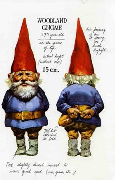

On the waterfront campus of University of Massachusetts Boston, students are accustomed to the usual soundtrack of university life: the hum of vending machines, the distant buzz of conversations in study lounges, and the quiet trickle of water from fountains and coolers scattered across the buildings. Water stations are common fixtures in campus buildings, often placed near restrooms or hallways to keep students hydrated during long study sessions.
But in recent months, a stranger rumor has circulated through the hallways and break rooms of the campus: the sound of gnomes behind the walls—particularly near the water coolers.

The earliest accounts reportedly came from students studying late in communal spaces. A few described hearing tiny taps and murmured chatter inside the walls shortly after someone used a water cooler. At first, most people dismissed the sounds as pipes expanding or water moving through the building’s plumbing.
However, the pattern seemed oddly specific. According to the stories, the sounds occurred only near water stations, never near classrooms or stairwells.
One student claimed that after filling a bottle late at night, they heard a distinct scraping noise behind the wall panel followed by what sounded like a tiny voice saying something unintelligible. When they pressed their ear to the wall, the noise stopped immediately.
According to campus folklore developing around the rumor, a hidden colony of tiny gnomes lives inside the infrastructure of the buildings. These mythical residents supposedly:
In this playful theory, the tapping noises are said to be tools striking pipes, while the faint murmurs are conversations among the gnomes themselves.
Some versions of the story even claim that the gnomes maintain the plumbing, ensuring that water flows properly throughout the campus.